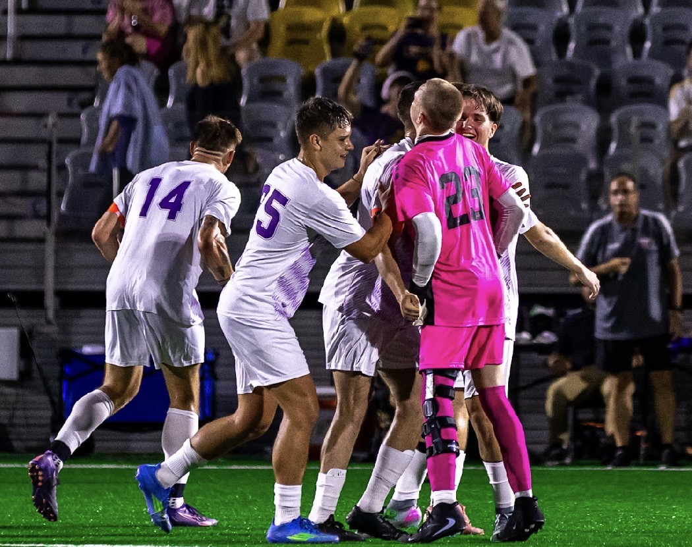

Welcome to the unofficial website of the Carlow University Men's Soccer Team!
| Date | Opponent | Location | Time |
|---|---|---|---|
| October 3 | @ Mt.-Aloysius | Kelly Field | 1:00 PM |
| October 10 | # Pitt.-Greensburg | FNB Stadium | 10:00 AM |
| October 13 | # Pitt.-Bradford | FNB Stadium | 5:00 PM |
| October 17 | @ Penn St.-Behred | Behrend Field | 1:00 PM |
| October 21 | # Hilbert | FNB Stadium | 2:30 PM |
| October 24 | # Penn St.-Altoona | FNB Stadium | 10:00 AM |
| October 27 | * La Roche | FNB Stadium | 5:00 PM |